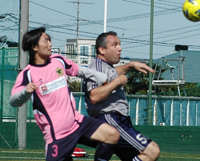
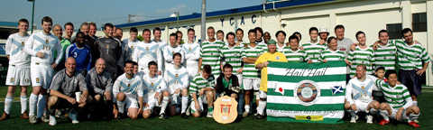
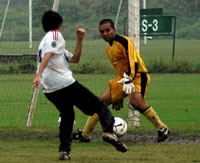

|
|
Panthers Striker Sho was on target once again as they salvaged a point vs Vags.
|
Point Taken!
Oi Futo, Saturday 31st October.
"They will definitely be taking the P**S out of us for doing this warm up" is what I said in between the inward and outward leg rotations to open up the groins as it were. Our ritual of winning every game after warming up as a team ended in a well fought game. Without too much real goalmouth action the game was played in good spirit and at a very competitive level. Overall I think the result was fair.
Credit to the Vags I think they defended very well and perhaps our decision to go with just one out and out striker proved to be a bit too cautious as their back 3 gave very little away and made life difficult for the division's top scoring striker Sho. more ...
RB
Depleted BFC Bag 3 Points
Hachioji Park, Saturday 31st October.
The timing of a fixture is so important to how the weekend pans out....a victory early on a Saturday and the rest of the weekend feels so much sweeter, and so it was to be for BFC against a resilient Zion. more ...
BFC
 |
|
James Musgrove Shields the ball from Alan Yang in a close battle.
|
Vags Hold Panthers Claws at Bay
Oi Futo, Saturday 31st October.
The first thing that comes to mind on meeting the Panthers this season is ‘what is the opposite of ‘pretty in pink’ because their kit just begs the question… more ...
RS
Celts Shake Off Jet Lag To Win Long Haul Game
Hanno, Sunday 25th October.
A two nil win over one of our many bogey teams allowed Celts to continue a decent little run. On the back of a morale boosting hard fought victory against BFC, it was another decent performance by the hoops and goals from Jo and Pete were just rewards. more ...
GD
Sala Pain as Hibs Snatch Last Minute Clincher.
Hachioji Park, Saturday 24th October.
Sala slipped further into the depths of TML 1 after yet another hard fought battle against a bickering yet purposeful Hibernian on Saturday evening. A late Mcgirr penalty in the dying moments saw last year’s cup winners snatch the points from under the nose of Sala, earning his team a 1 - 0 victory more ...
IJ
Hibs Punish Sala Slapper
Hachioji Park, Saturday 24th October.
As a non-native English speaker I cannot tell you what the word Sala means, but I can tell you that it means "living room" in Portuguese as well as in Spanish. On the pitch however, Sala means trouble. I have played against them about 6 times and every single time, it was a very physical game full of sweet words, specially between Guido and Bevan. more ...
AP
Geckoes Prevail in the Mud
Todoroki, Sunday 25th October.
The Geckoes ground out a tough win on the muddy Todoroki dirt pitch against Zion Sunday night. The Geckoes started very well and put Zion under lots of pressure which told after 10 minutes, ending in a superb shot from the top of the box by Yu Kawane, giving the keeper no chance. more ...
PZ
Homecrowd cheer 4 YCAC….and for Lions 2!
YC&AC, Sunday 25th October.
Lions went into the game against the Champs, with many changes including Kaneko in goal for Orlando, Momo and Mo Birkia in defence for the injured duo of Sima and Notti. The midfield was also missing the key holder, Fahad.
Abu and Ken who caused BFC so much trouble were both available but with strapped up ankles, we were not sure if they would last the full game.more ...
HS
 |
|
Mori directs the traffic as Pathers run down the dutch in a colourful battle.
|
No Going Dutch for Panthers.
Mitsuike Koen, Saturday 24th October.
Mitsuike Koen was the scene for the garish clash between Orange and Pink early doors on Saturday. The pitch is relatively short in length and surrounded by trees, giving it an enclosed feel which really helped to crank up the volume of both teams travelling hoards of fans who had come in impressive numbers.
Full warm-ups complete, the pitch marked and it was game on. more ...
BC
BFC Notch First Win Over Resilient Lions
Fukuda Denshi, Sunday 18th October.
BFC went into this fixture following a first defeat of the season at the hands of a typically combative Celts' team but also in the knowledge that they were yet to register a victory over Lions in their two previous meetings. Game on. more ...
BFC
Cup Kicks Off Without Big 2
Tokyo Tues 20th October.
The draw for the first round of this years FJ Cup has been made, with last years 2 finalists getting a bye to the 2nd round. As there are just 30 teams in the cup this year, it was decided to have 28 teams play the first round then having Hibs and Celts join the winning 14 teams in the 2nd round to make it a straight knock-out from there on in. full draw
FJ
British Lions Finally Get One Over The Lions
Fukuda Denshi, Sunday 18th October.
Lions no doubtedly had the strongest squad out for the BFC game despite the late withdrawal of Captain Somi, lethal striker Ahmed AlZahrani, and BFC's ex-midfielder Momo. more ...
HS
 |
|
Andre Pinto Shields the ball from Zion (or is he trying to slap it?)
|
Kuni Calms Hibs Frustrations
YC&AC Sunday 18th October.
Hibs went all the way to YCAC to face Zion, a team that we knew very little about, except for the fact that they have not beaten anyone so far. However, Hibs have learned from past experiences not to underestimate the bottom table teams. It has cost us at least two championships. more ...
AP
Pumas Slip Past King George
Horisaki Koen. Saturday 17th October..
Pumas got their 2nd straight win as their aging striker, 'Silver fox' scored a late winner putting them above opponents King George in the Division 3 tables.
It's great to turn up to play and find the pitch is a beautiful 3rd Generation astroturf surface, it makes the hour trek there all worthwhile. And then it decides to start raining. more ...
MB
Celts Lift Top 3 Curse
Fukuda Denshi, Saturday 10th October.
Despite their highest ever finish in the TML last season (4th) the Kanto Celts did not manage to beat any of the top three. Having been beaten by YC&AC and Hibs already this season, it would have been hard to back the Celts for this one. The sense of relief and achievement come the final whistle on Saturday was clear then, as the hoops pulled off a real upset toppling the high flying BFC.. more ...
PM
|  |
|
Andy Chambers causes trouble with his strength up front for YCAC 2nds
|
Buen Tiempo Pero Mal Tiempo
YCAC, Sunday 11th October.
Perfect weather and a great surface greeted the Panthers upon arrival at YCAC on Sunday morn. At the other side of the ground the Silver and Navy were being put through their paces in a pre-match warm-up and were clearly up for it.
The Panthers after a strong start to the season lined up feeling confident but after a close pre-season encounter against the seconds, they knew that nothing could be taken for granted. more ...
JT
Makeshift Hibs Beat Makeshift Geckoes.
Fukuda Denshi, Saturday 10th October.
If a good football game is like a fine wine, then Saturday's match between Hibs and Gecks was a decanter of Saizeriya red. Lacking in taste and character perhaps, but with plenty of zing for your yen. more ...
JA
Celtic Win Tartan Challenge

 |
|
Not a common site at TML matches, Kilted linesman with flag & Beer!
|
YCAC, Saturday 10th October.
Yokohama welcomed the arrival of the Tartan Army last week, on the road once again supporting their beloved Scotland who were here to play against Japan in the Kirin Challenge (friendly match). TML Organizer, Sid, was once again asked if he could set up a friendly match for the men in kilts. As before (report on last visit) he obliged, setting up a 3 way tourney with YCAC Old boys and Tokyo's Celtic Supporters Club joining the TA.
PHOTO GALLERY
In the first match, Tokyo CSC beat the YCAC Over 35's 4-2. The Old boys then took on the Tartan Army, taking a 1-0 lead right into the final stages of the match before the TA kitted out in a very nice St Andrews Cross strip, equalized just before the end. The Final match was a battle for the Tartan Challenge Sheild between Martin Burns' Tokyo CSC and the TA led by Mark Sims. CSC took this by storm 4-1 despite going a goal down, but it was all played in great spirit.. more from the Scotsman ...
A Game of Two Halves?
|
|
Matt Wallace headed home number 2 for YCAC2nds!
|
YCAC, Sunday 11th October.
Although it is too early in the season to read too much into league positions, YCAC 2`s versus Panthers pitched the undefeated league leaders against a YCAC team yet to get off the mark. And a good game it turned out to be - 5 goals, 2 red cards, and 1 controversial winner in extra time.
Panthers were on top for the first 20 and must have been left scratching their heads at being 2 goals down at the end of the first quarter. Classic counter-attacking and a bit of hesitation in the Panthers defence led to goals from Neil Shonhard and Matt Wallace more ...
SM
 |
|
As if losing isn't enough, Zion's Benji gets a boot in the family jewels for his troubles.
|
YCAC Give Zion More Misery
YCAC, Sunday 11th October.
YC&AC 1st team scored seven goals to take their second victory of the season against a persistent ZION FC on a sunny Sunday afternoon at YC&AC, on October 11th. It wasn't all one-way traffic though as Zion pulled 2 goals back, one either side of half-time but YCAC also could have netted a few more. more ...
JT
TML NEEDS YOUR HELP
Setagaya Koen, 10 minutes out of Shibuya, has a beautiful 3rd generation pitch (some of you may have played there last season). Unfortunately it is usually used for baseball so it's difficult to book it for the league. It has come to our attention that from November 1st, despite having floodlights, the ground closes at 5:00pm instead of 9:00pm as it does in the summer. This is because baseballers don't play in the cold winter evenings & they have been closing early since the days when it was a dirt ground. We have spoken to the Ward Office about having the ground open til 9:00pm during these winter months as us footballers would be happy to use it, but of course getting this done could take a while as it must go though committees that will take time to process the request. What could speed up the process is if they get lots of requests through the 'comments' page of their website. If you don't read or write Japanese, please could you ask your spouse, girlfriend, co-worker to fill in the form (JAPANESE ONLY) HERE requesting that the ground be made available in the evenings from November. Don't worry if you don't live in Setagaya-ku, anyone can fill in the form, the more the merrier! This could help us secure a much needed ground in a very good location. For an explanation in Japanese CLICK HERE ...
FJ
BFC and FCI turn football into Cricket in a 12 goal thriller.
ASIJ, Sunday 4th October.
This was always going to be a difficult one. The match report I mean. Who can actually recall 12 goals in detail? Wish I was writing the Lion 'n Zion report. You could play around with that all day.
The new Referee that TML managed to ship in from her majesty's shores specially for this game was probably wondering whether he had boarded the wrong vessel and ended up in the southern cape of Africa for the ICC trophy finals.
He was quite good by the way. More of him please. more ...
EGK
|  |
|
Despite the mud, Romen kept his sheet clean as he deputised in goal!
|
Stuck in the Mud, or Not.
Misato, Saturday 3rd October.
Well it came as a shock to everyone that the infamous Misato ground was given the nod early on Saturday morning despite the rain that'd been falling the previous day.
Actually for those who were awake at 7:00am the first thing that greeted them on opening the curtains was blue sky and sunshine...... but it didn't last.
A full compliment of Pumas made it to the ground on time where the surface was nicely watered to the extent of being stodgy in places and the overcast sky just promised more rain and duly obliged. more ...
MB
Celts Bag First Win at Expense of Geckoes
Misato, Saturday 3rd October.
Kanto Celts proved too strong to a seemingly under strength Geokes outfit in Misato on Saturday.
1 point from 9 going into this game, the Celts were desperate for 3 points to kick start their season. The general consensus though was that the gods weren’t smiling on us for last week’s 1-1 against the Lions. more ...
PMG
Hussein's Brace helps Lions Past Zion
Misato, Saturday 3rd October.
Again Lions had barely 11 players to start with, due to 4 or 5 players busy in the African Festival, and with a week of rain, the pitch was a challenge. more ...
HS
Smells Like Team Spirit
Misato, Saturday 3rd October
After two consecutive defeats, the Dutch Embassy team had JETRO, another division 2 stalwart, in their sights to kickstart the season. more ...
LVL
|